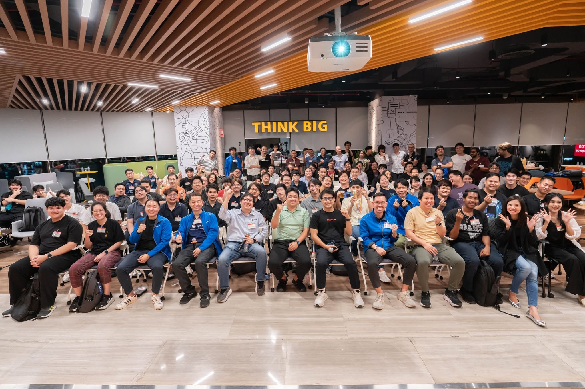

01 / ABOUT MEKAJITSAK PANSIT
About MePersonal information.
- ชื่อ–นามสกุล
- ขจิตศักดิ์ พันธิ์สิทธิ์
- การศึกษา
- ชั้นปีที่ 4 · สถาบันเทคโนโลยีไทย-ญี่ปุ่น
- คณะ / สาขา
- เทคโนโลยีสารสนเทศ / เทคโนโลยีสารสนเทศ
- ผลการเรียน
- GPAX 3.15
- ที่อยู่
- 62 ต.ปากน้ำ อ.เมือง จ.สมุทรปราการ 10270
อ่านเรซูเม่ฉบับเต็ม (PDF)02 / SKILLSKNOWLEDGE INTO PRACTICE
ทักษะHard skills & soft skills.
Hard Skills
- Programming Languages
- Java · JavaScript · C# · Python
- Networking & Virtualization
- Cisco Packet Tracer · VLAN / Subnetting · Routing · IPS / IDS · DHCP · NAT · VMware Workstation
- Languages
- ไทย — ภาษาแม่
ญี่ปุ่น — JLPT N5
อังกฤษ — พื้นฐาน
Soft Skills
- Time Management
- การบริหารเวลา
- Team Collaboration
- การทำงานร่วมกับทีม
- Fast Learner & Growth Mindset
- เรียนรู้สิ่งใหม่ได้รวดเร็ว และพร้อมพัฒนาตนเอง
03 / SELECTED WORKFROM LEARNING TO BUILDING
ผลงานAutomation / RPA
ระบบอัตโนมัติจากรายวิชา RPA
เชื่อมต่อข้อมูลและขั้นตอนการขนส่ง
01 · ROBOTIC PROCESS AUTOMATIONระบบจัดการพัสดุ
และแจ้งเตือนลูกค้า
Automated Parcel Management and Notification System
ระบบจำลองการทำงานของธุรกิจขนส่ง พัฒนาสำหรับรายวิชา RPA รองรับการรับฝากพัสดุจากลูกค้าและแยกข้อมูลตามบริษัทขนส่ง พร้อมระบบสำหรับพนักงานในการดำเนินการขนส่งพัสดุ สำรองข้อมูล ตรวจสอบตำแหน่งพัสดุ และ Dashboard สรุปผลการดำเนินงานของแต่ละบริษัทขนส่ง
- รับฝากพัสดุและแยกตามบริษัทขนส่ง
- ดำเนินการขนส่งผ่านระบบพนักงาน
- สำรองข้อมูลและตรวจสอบตำแหน่งพัสดุ
- สรุปผลแต่ละบริษัทขนส่งผ่าน Dashboard
Power AutomateExcelOutlookLINE OAPower BI
04 / CERTIFICATES & COMMUNITYCERTIFICATES & COMMUNITY
ประกาศนียบัตร
และการอบรมCertificates & community.
พัฒนาความรู้ด้าน AI และความมั่นคงปลอดภัยไซเบอร์
ผ่านหลักสูตรและการเรียนรู้จากชุมชนเทคโนโลยี

COMMUNITY / CLOUD NATIVE BANGKOK AIเรียนรู้จากชุมชน
Cloud Native & AI
เข้าร่วมงาน Cloud Native Bangkok AI และรับฟังการบรรยายเกี่ยวกับการนำ AI มาประยุกต์ใช้บนโครงสร้างพื้นฐาน Cloud Native รวมถึงแนวทางใช้ AI ในกระบวนการพัฒนาซอฟต์แวร์
- Building Inference Workloads with vLLM on Kubernetes (EKS)
- Cloud Native AI Agents with ADK, A2A & kagent
- AI Gateway in the Cloud Native AI Landscape
- Panel Discussion: AI ใน SDLC — ใช้แค่ไหนถึงพอดี
เปิดมุมมองด้านการให้บริการโมเดล AI การทำงานร่วมกันของ AI Agents และการเลือกใช้ AI ให้เหมาะสมกับขั้นตอนพัฒนาซอฟต์แวร์